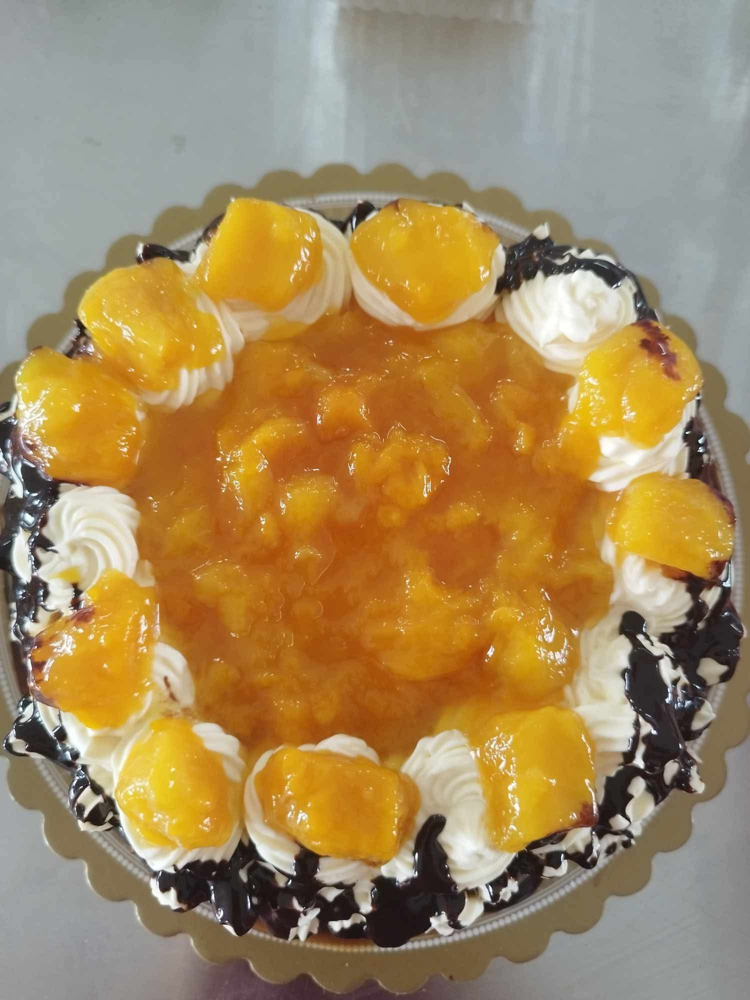
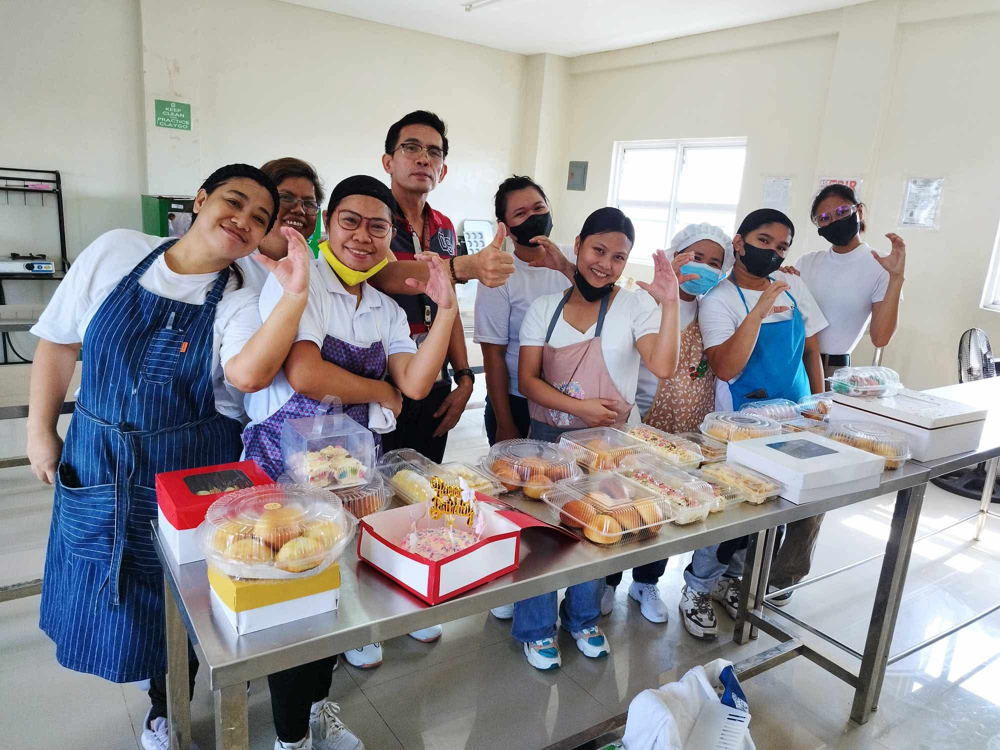
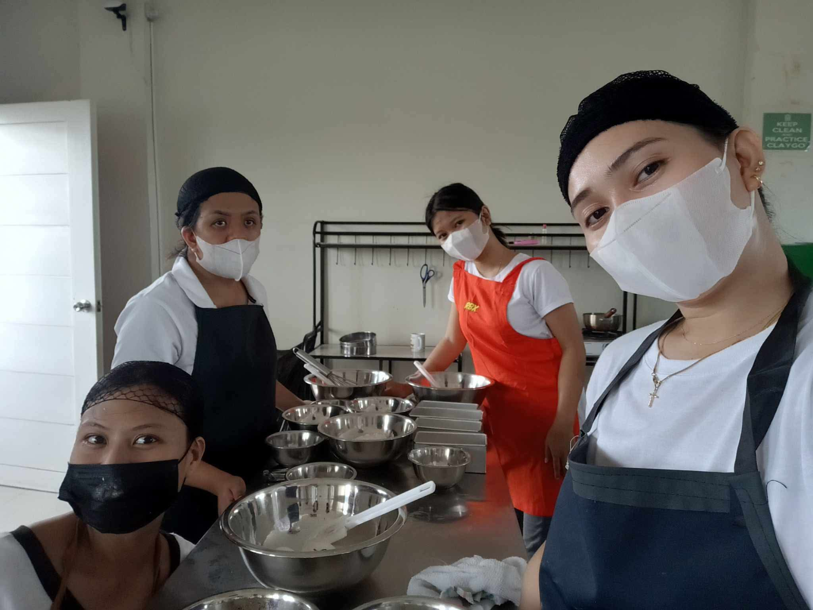

About Me

Hi! You can call me Chelle. I am a second-year Bachelor of Arts in Multimedia Studies (BAMS) student at the University of the Philippines Open University. Welcome to my personal website!
Things I Love
I love spending time with my family, travelling, listening to music, and exploring new places. I also enjoy trying new food, learning new things, and making wonderful memories with my loved ones.
Passion Projects
My Baking Journey
Baking is one of my favourite activities. I enjoy learning new recipes, creating delicious desserts, and improving my skills. I also enjoy participating in baking activities where I can learn new techniques and share experiences with others.


